* Instagram принадлежит Meta, признанной экстремистской организацией в РФ

Вход с торца дома: по лестнице мимо бутылок
с цветами, под деревом с гирляндой.
На Таганке.Издаём пиццу
каждый день свежий
тираж в переулке
Маяковского


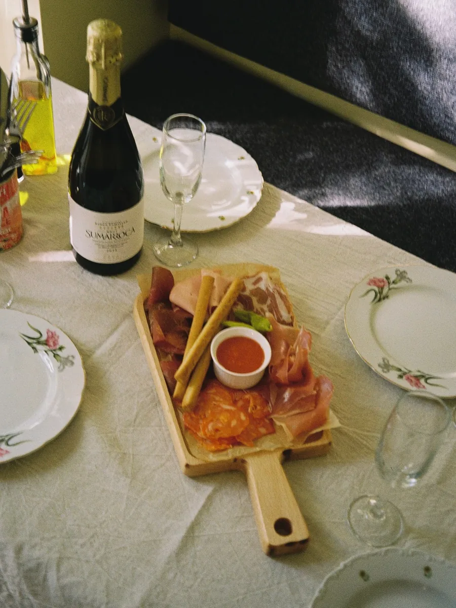
Небольшая пиццерия на Таганке, в переулке Маяковского, рядом с метро «Марксистская». Вход с торца жилого дома: подняться по лестнице мимо бутылок с цветами, пройти под деревом с гирляндой. Держат её Настя и Стас. Название не случайное, место устроено как маленькая редакция. Пицца здесь — ежедневный тираж: тесто и печь каждый день, меню обновляется раз в неделю. Что вышло в этом номере, написано на листе, который приносят на доске с зажимом. В меню пицца и фокачча, итальянские закуски, салаты, десерты и выпечка к кофе. Недавно появилось вино и коктейли на его основе: негрони, домашний вермут.
Внутри просто: пластиковые стулья, банки томатов, лимоны на столах, цветы в бутылках. Наполовину Италия, наполовину двор, где выросли хозяева. Сюда приходят поесть пиццу, а не на ужин с дресс-кодом.


Выходим
ежедневно
с 12:00 до 22:00.
Столик —
по телефону
+7 967 079-60-93.
Ждём вас!


1Меню меняем каждую неделю. Теперь есть вино и коктейли на его основе.
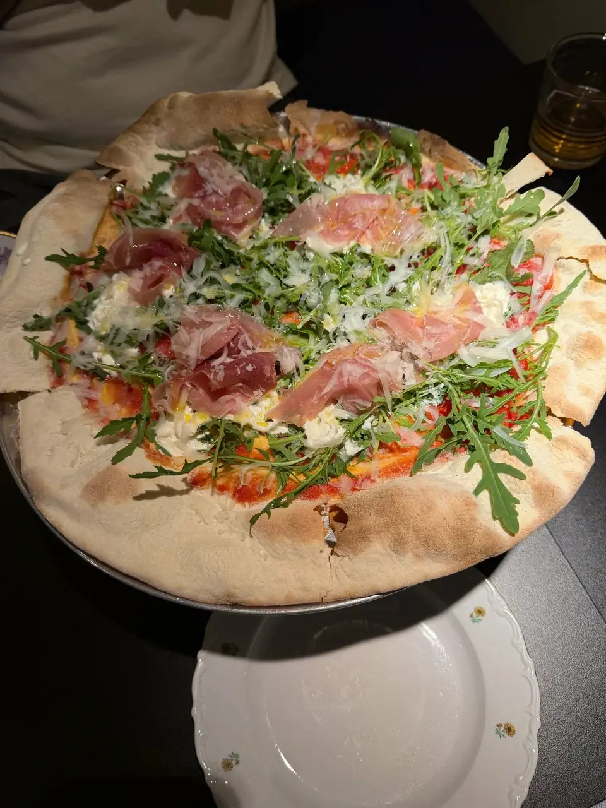
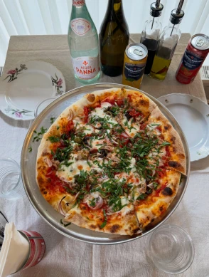
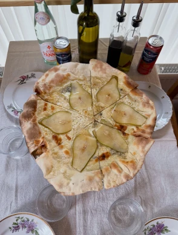
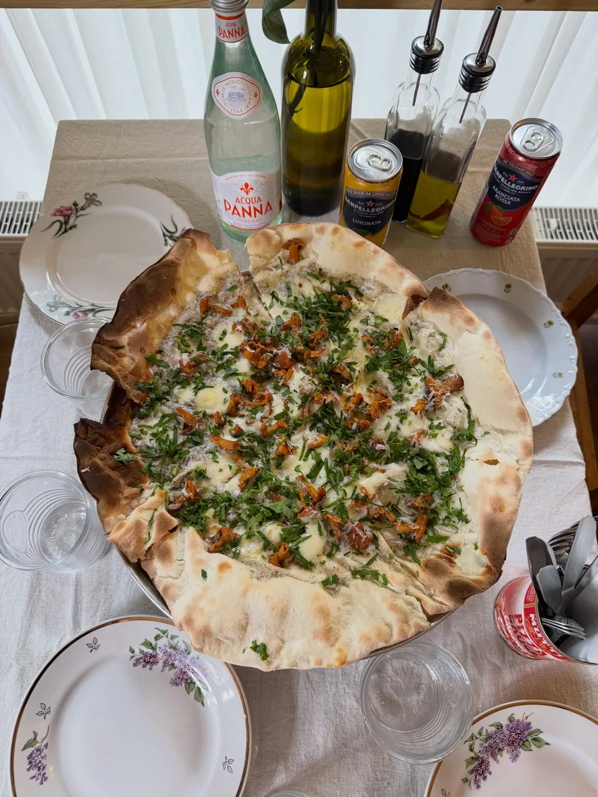
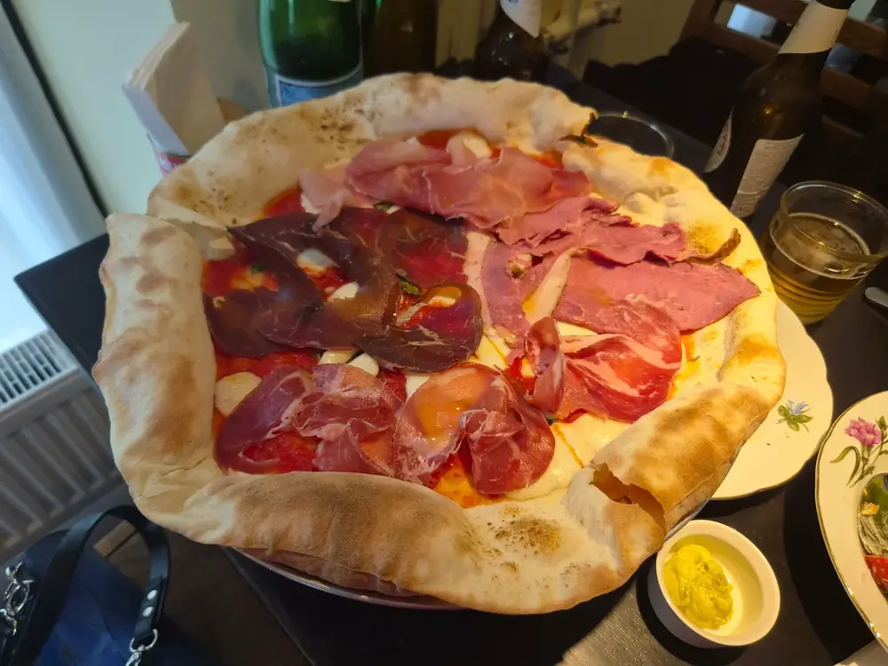
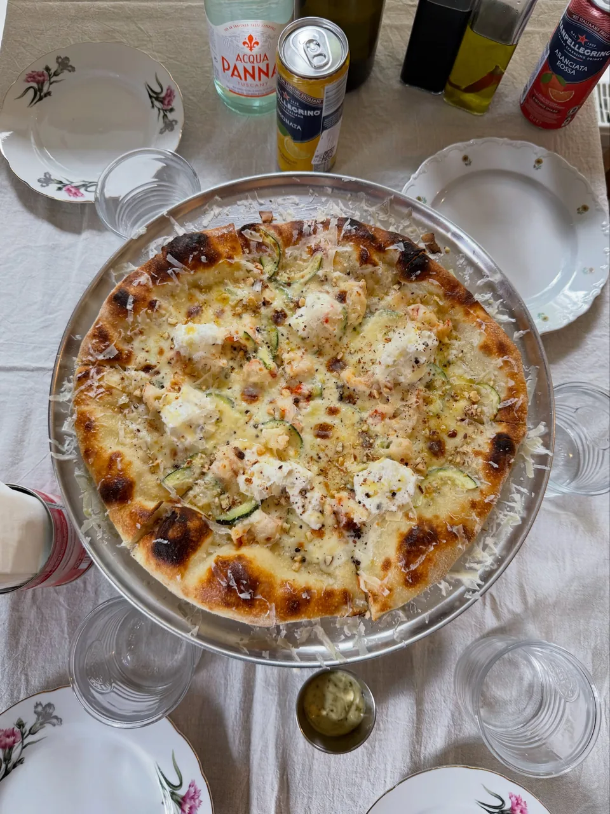
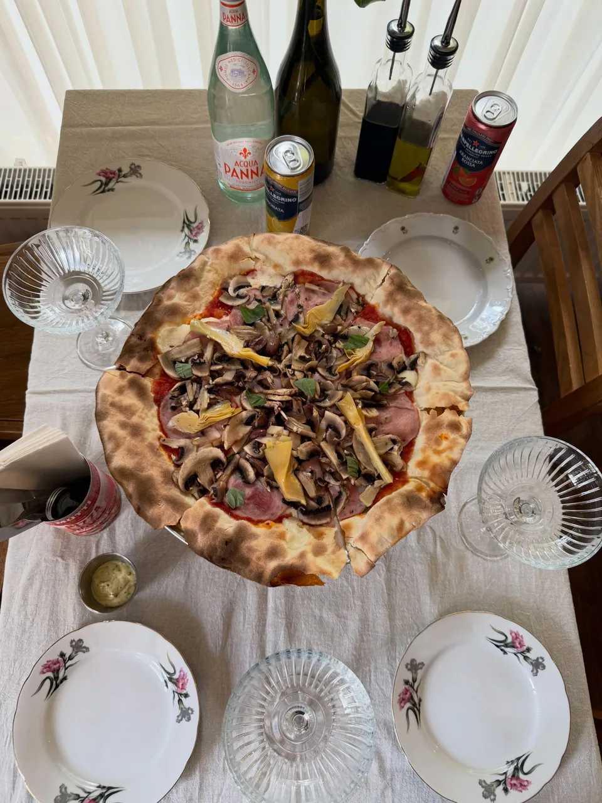
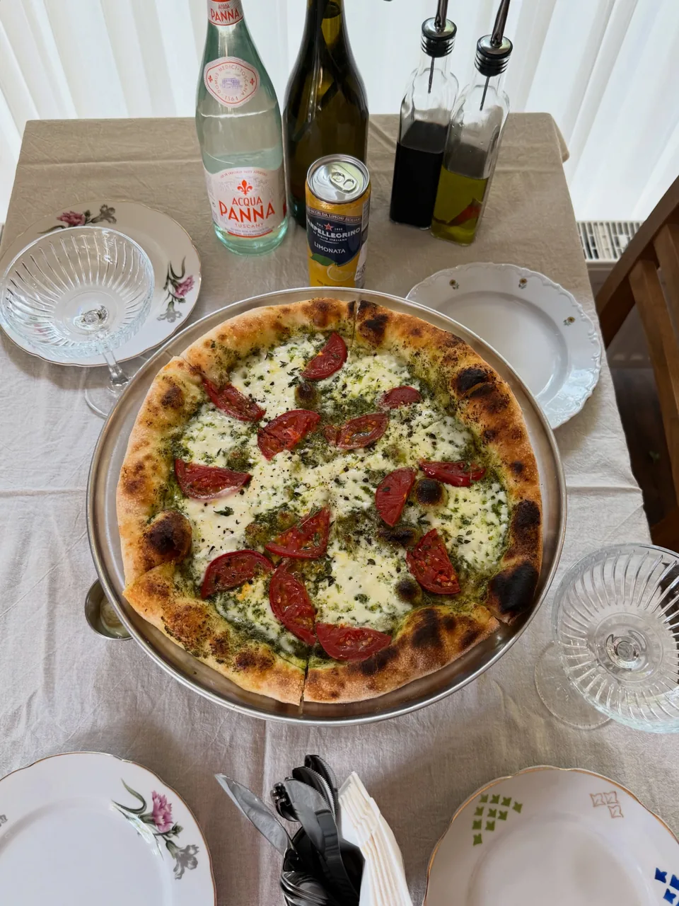
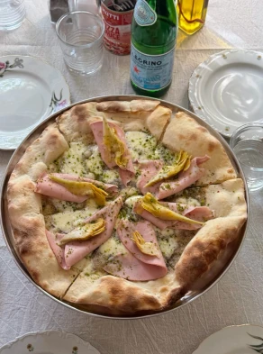
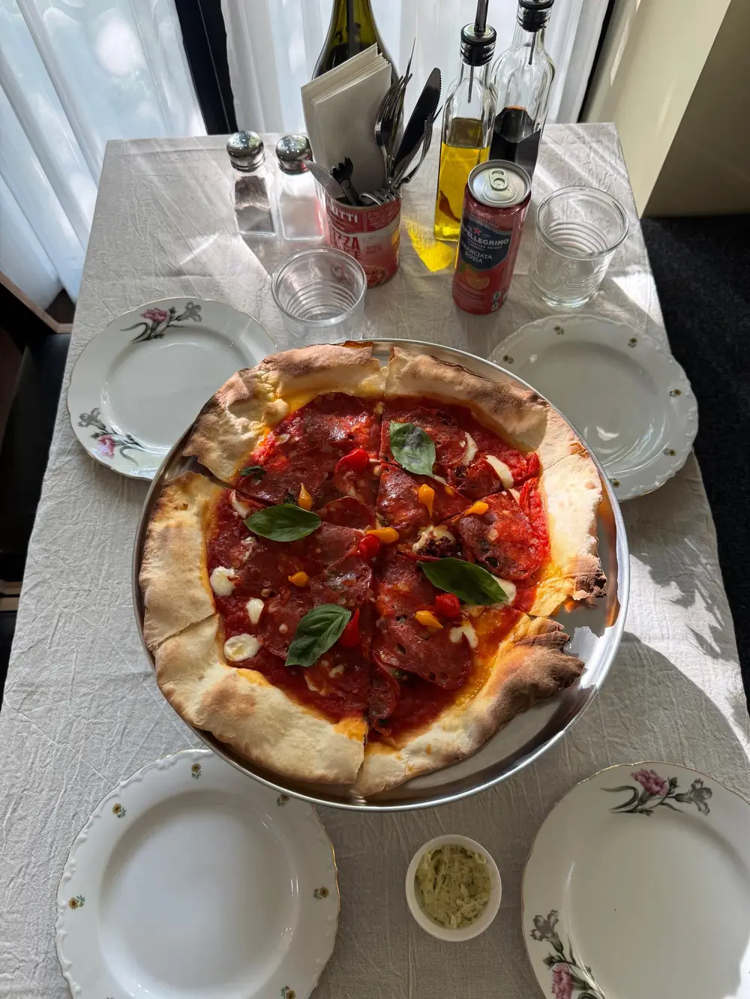
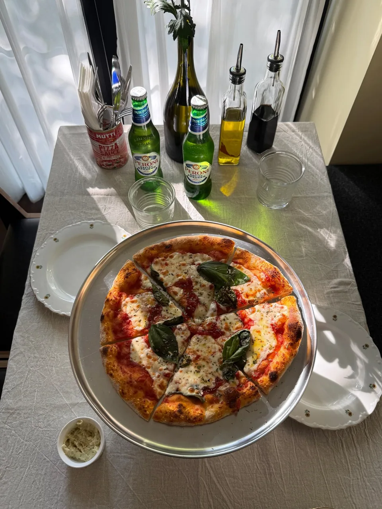
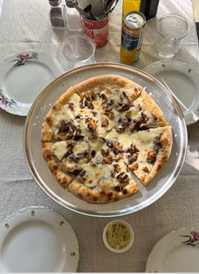
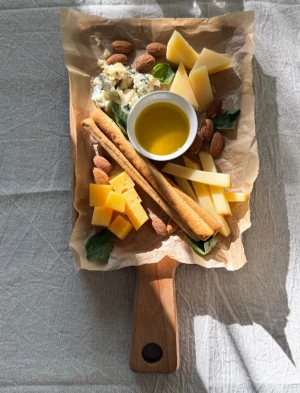
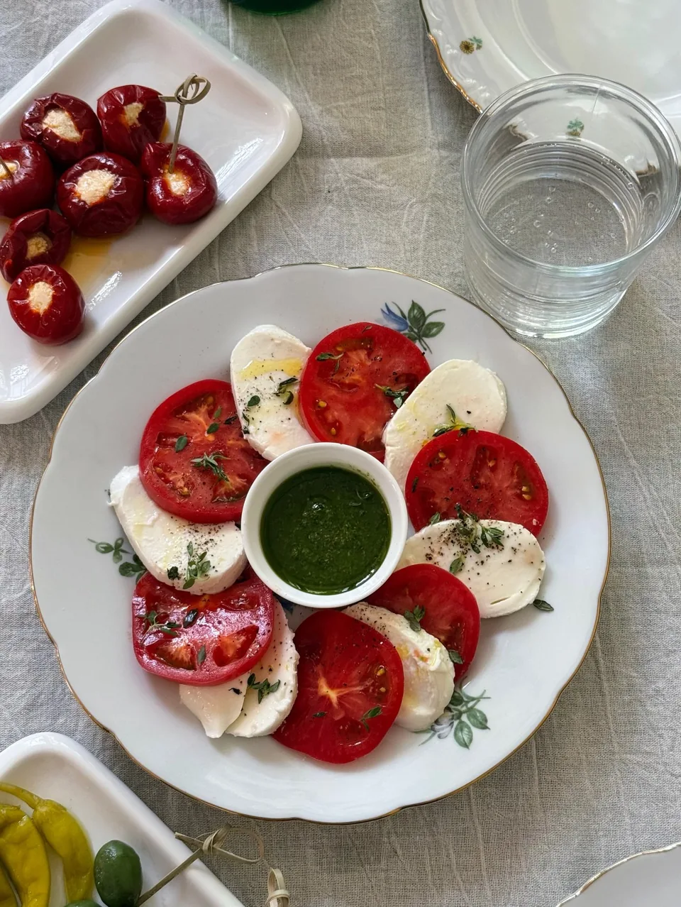

1Столик — по телефону +7 967 079-60-93.
переулок Маяковского, 2
м. Марксистская
с торца дома, со стороны Марксистской, вверх по лестнице
ежедневно 12:00–22:00
в зале и с собой, доставка скоро

§Политика конфиденциальности
Сайт — информационная страница пиццерии «Издательство пиццы» (Москва, переулок Маяковского, 2). Владелец сайта: ООО «Солнцестояние», ИНН 9718289650, ОГРН 1257700537302, адрес: 109147, г. Москва, пер. Маяковского, д. 2, пом. 1/1, e-mail [уточнить].
Сайт не собирает и не хранит персональные данные: на нём нет форм, регистрации, онлайн-заказа, счётчиков и систем аналитики. Собственные cookie сайт не устанавливает. Выбранный язык интерфейса хранится в браузере посетителя (localStorage) и никуда не передаётся.
На странице «Забронировать» встроена карта Яндекс Карт. При её загрузке браузер обращается к серверам Яндекса, который может использовать собственные cookie в соответствии со своей политикой конфиденциальности.
Страницы сайта отдаются с серверов хостинг-провайдера ООО «Яндекс.Облако», который получает технические данные запроса (IP-адрес, тип браузера) в объёме, необходимом для показа страницы. Сайт доступа к этим данным не имеет и не обрабатывает их.
Столик бронируется по телефону; звонки и переписка происходят вне сайта.
Вопросы по этой политике: e-mail [уточнить]. Редакция от 20 сентября 2026 года.